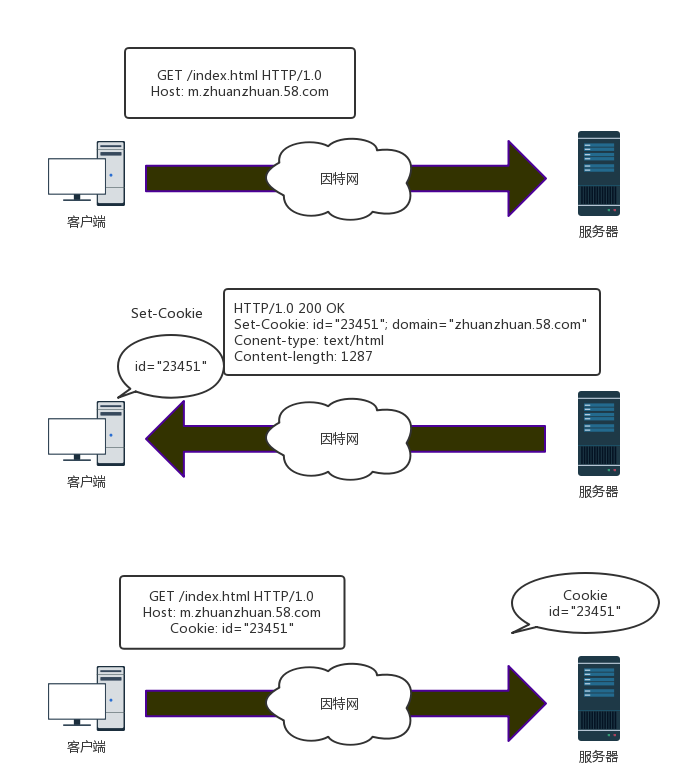

<!DOCTYPE html>
<html>
<head><meta name="generator" content="Hexo 3.8.0">
  <meta charset="utf-8">
  

  
  <title>Cookie | Gzqqqqq</title>
  <meta name="viewport" content="width=device-width, initial-scale=1, maximum-scale=1">
  
  
  
  <meta name="description" content="会话（Session）跟踪是Web程序中常用的技术，用来跟踪用户的整个会话。 常用的会话跟踪技术是Cookie与Session。 Cookie通过在客户端记录信息确定用户身份； Session通过在服务器端记录信息确定用户身份。 Cookie机制cookie原理由于http是无状态的协议，一旦客户端和服务器的数据交换完毕，就会断开连接，再次请求，会重新连接； 这就说明服务器单从网络连接上是没有办法">
<meta name="keywords" content="Cookie">
<meta property="og:type" content="article">
<meta property="og:title" content="Cookie">
<meta property="og:url" content="http://Gzqqqqq.github.io/public/2019/04/01/Cookie/index.html">
<meta property="og:site_name" content="Gzqqqqq">
<meta property="og:description" content="会话（Session）跟踪是Web程序中常用的技术，用来跟踪用户的整个会话。 常用的会话跟踪技术是Cookie与Session。 Cookie通过在客户端记录信息确定用户身份； Session通过在服务器端记录信息确定用户身份。 Cookie机制cookie原理由于http是无状态的协议，一旦客户端和服务器的数据交换完毕，就会断开连接，再次请求，会重新连接； 这就说明服务器单从网络连接上是没有办法">
<meta property="og:locale" content="default">
<meta property="og:image" content="http://gzqqqqq.github.io/public/2019/04/01/Cookie/Cookie通讯.png">
<meta property="og:image" content="http://gzqqqqq.github.io/public/2019/04/01/Cookie/cookie1.png">
<meta property="og:updated_time" content="2019-04-01T12:42:19.671Z">
<meta name="twitter:card" content="summary">
<meta name="twitter:title" content="Cookie">
<meta name="twitter:description" content="会话（Session）跟踪是Web程序中常用的技术，用来跟踪用户的整个会话。 常用的会话跟踪技术是Cookie与Session。 Cookie通过在客户端记录信息确定用户身份； Session通过在服务器端记录信息确定用户身份。 Cookie机制cookie原理由于http是无状态的协议，一旦客户端和服务器的数据交换完毕，就会断开连接，再次请求，会重新连接； 这就说明服务器单从网络连接上是没有办法">
<meta name="twitter:image" content="http://gzqqqqq.github.io/public/2019/04/01/Cookie/Cookie通讯.png">
  
    <link rel="alternate" href="/atom.xml" title="Gzqqqqq" type="application/atom+xml">
  
  
    <link rel="icon" href="/images/default-avatar.jpeg">
  
  
    <link href="//fonts.googleapis.com/css?family=Source+Code+Pro" rel="stylesheet" type="text/css">
  
  <link rel="stylesheet" href="/css/style.css">
  <link rel="stylesheet" href="/css/highlight.css">
</head>
</html>
<body>
  <div id="fullpage" class="mobile-nav-right">
    
      <div id="wrapper" title="图片来自网络">
    
    
      <header id="header">
  <div id="nav-toggle" class="nav-toggle"></div>
  <div class="head-box global-width">
    <nav class="nav-box nav-right">
      
        <a class="nav-item" href="/" title>首页</a>
      
        <a class="nav-item" href="/archives" title>归档</a>
      
    </nav>
  </div>
</header>
      <div id="middlecontent" title class="global-width sidebar-right">
        <section id="main"><article id="post-Cookie" class="article global-container article-type-post" itemscope itemprop="blogPost">
  
    <header class="article-header">
      
  
    <h1 class="article-title" itemprop="name">
      Cookie
    </h1>
  

    </header>
  
  <div class="article-meta">
    <a href="/2019/04/01/Cookie/" class="article-date">
  <time datetime="2019-04-01T12:26:47.000Z" itemprop="datePublished">2019-04-01</time>
</a>
    
    
  <ul class="article-tag-list"><li class="article-tag-list-item"><a class="article-tag-list-link" href="/tags/Cookie/">Cookie</a></li></ul>

  </div>
  
    <span id="busuanzi_container_page_pv">
      本文总阅读量<span id="busuanzi_value_page_pv"></span>次
    </span>
  

  <div class="article-inner">
    
    <div class="article-content article-content-doorframe" itemprop="articleBody">
      
       
  	
  	  <p><strong>会话</strong>（Session）跟踪是Web程序中常用的技术，用来跟踪用户的整个会话。</p>
<p>常用的会话跟踪技术是<strong>Cookie与Session</strong>。</p>
<p><strong>Cookie</strong>通过在<strong>客户端记录信息</strong>确定用户身份；</p>
<p><strong>Session</strong>通过在<strong>服务器端记录信息</strong>确定用户身份。</p>
<h2 id="Cookie机制"><a href="#Cookie机制" class="headerlink" title="Cookie机制"></a>Cookie机制</h2><h3 id="cookie原理"><a href="#cookie原理" class="headerlink" title="cookie原理"></a>cookie原理</h3><p>由于<strong>http是无状态的协议</strong>，一旦客户端和服务器的<strong>数据交换完毕</strong>，就会<strong>断开连接，再次请求，会重新连接</strong>；</p>
<p>这就说明服务器单从网络连接上是没有办法知道用户身份的。</p>
<p>则服务器给每次<strong>新的用户请求</strong>时，给它颁发一个身份证（独一无二）；</p>
<p>下次访问，必须带上身份证，这样服务器就会知道是谁来访问了；</p>
<p>针对不同用户，做出不同的响应。</p>
<p>其实cookie是一个很小的文本文件，是浏览器储存在用户的机器上的。</p>
<p><strong>cookie是纯文本，没有可执行代码。储存一些服务器需要的信息；</strong></p>
<p>每次请求站点，会发送相应的cookie，这些cookie可以用来辨别用户身份信息等作用。</p>
<p></p>
<p>由上图可知，当一个<strong>客户端首次请求服务器</strong>时；</p>
<p>服务器端会响应客户端请求，并且<strong>返回一个Set-Cookie</strong>；</p>
<p>当客户端再次访问该服务器时，请求首部会发送一个Set-Cookie给服务器端；</p>
<p>这样服务器就能针对不同用户，做出不同的响应。</p>
<p></p>
<p>如图所示，用户首次访问服务器，服务器会返回一个独一无二的识别码；id=23451</p>
<p>这样服务器可以用这个码跟踪记录用户的信息，（购物历史，地址信息等）。</p>
<p>cookie可以包含任意的信息，不仅仅是id，客户端会记录服务器返回来的Set-Cookie首部中的cookie内容；</p>
<p>并将cookie存储在浏览器的cookie数据库中；</p>
<p>当用户访问同一站点时，浏览器就会挑选当时该站点颁发的id=XXX的身份证（cookie），并在Cookie请求首部发送过去。</p>
<hr>
<h3 id="cookie的类型"><a href="#cookie的类型" class="headerlink" title="cookie的类型"></a>cookie的类型</h3><p>可以按照过期时间分为两类：<strong>会话cookie和持久cookie</strong>。</p>
<p><strong>会话cookie是一种临时cookie</strong>，用户退出浏览器，会话Cookie就会被删除了。</p>
<p><strong>持久cookie则会储存在硬盘里</strong>，保留时间更长，关闭浏览器，重启电脑，它依然存在。</p>
<p>通常是持久性的cookie会维护某一个用户周期性访问服务器的配置文件或者登录信息。</p>
<p>持久cookie 设置一个<strong>特定的过期时间</strong>（Expires）或者<strong>有效期</strong>（Max-Age）</p>
<p><em>通过日期设置Cookie过期时间</em></p>
<div class="highlight-box" autocomplete="off" autocorrect="off" autocapitalize="off" spellcheck="false" contenteditable="true" data-rel="BASH"><figure class="iseeu highlight /bash"><table><tr><td class="gutter"><pre><span class="line">1</span><br></pre></td><td class="code"><pre><span class="line">Set-Cookie: id=a3fWa; Expires=Wed, 21 Oct 2019 07:28:00 GMT;</span><br></pre></td></tr></table></figure></div>
<p><em>通过Max-Age设置Cookie的过期时间</em></p>
<p><strong>如果设置的max-Age为正数</strong>，则表示Cookie会在maxAge秒之后自动消失。</p>
<p>浏览器会将maxAge为正数的Cookie持久化，即写到对应的Cookie文件中。</p>
<p>无论客户关闭了浏览器还是电脑，只要还在maxAge秒之前，登录网站时该Cookie仍然有效。</p>
<p>下面的代码Cookie将永远有效</p>
<div class="highlight-box" autocomplete="off" autocorrect="off" autocapitalize="off" spellcheck="false" contenteditable="true" data-rel="BASH"><figure class="iseeu highlight /bash"><table><tr><td class="gutter"><pre><span class="line">1</span><br><span class="line">2</span><br><span class="line">3</span><br></pre></td><td class="code"><pre><span class="line">Cookie cookie = new Cookie(<span class="string">"username"</span>,<span class="string">"helloweenvsfei"</span>); // 新建Cookie</span><br><span class="line">cookie.setMaxAge(Integer.MAX_VALUE);                     // 设置生命周期为MAX_VALUE</span><br><span class="line">response.addCookie(cookie);                              // 输出到客户端</span><br></pre></td></tr></table></figure></div>
<p><strong>如果设置的max-Age为负数</strong>，则表示Cookie仅在本浏览器窗口以及本窗口打开的子窗口内有效。关闭窗口后Cookie失效。</p>
<p>maxAge为负数的Cookie，为<strong>临时性Cookie</strong>，<strong>不会被持久化</strong>，不会被写到Cookie文件中。</p>
<p>Cookie信息保存在浏览器内存中，因此关闭浏览器该Cookie就消失了。</p>
<p><strong>因此默认的CookiemaxAge值为 -1。</strong></p>
<p><strong>如果设置的max-Age为 0</strong>，则<strong>表示删除该Cookie</strong>。</p>
<p>Cookie机制没有提供删除Cookie的方法，因此通过设置该Cookie<strong>即时消失实现删除</strong>Cookie的效果。</p>
<p><strong>失效的Cookie会被浏览器从Cookie文件或者内存中删除</strong>。</p>
<p>删除Cookie代码如下：</p>
<div class="highlight-box" autocomplete="off" autocorrect="off" autocapitalize="off" spellcheck="false" contenteditable="true" data-rel="BASH"><figure class="iseeu highlight /bash"><table><tr><td class="gutter"><pre><span class="line">1</span><br><span class="line">2</span><br><span class="line">3</span><br></pre></td><td class="code"><pre><span class="line">Cookie cookie = new Cookie(<span class="string">"username"</span>,<span class="string">"helloweenvsfei"</span>); // 新建Cookie</span><br><span class="line">cookie.setMaxAge(0);                                     // 设置生命周期为0，不能为负数</span><br><span class="line">response.addCookie(cookie);                              // 必须执行这一句</span><br></pre></td></tr></table></figure></div>
<hr>
<h3 id="Cookie的修改、删除"><a href="#Cookie的修改、删除" class="headerlink" title="Cookie的修改、删除"></a>Cookie的修改、删除</h3><p>Cookie并不提供修改、删除操作。</p>
<p>如果要修改某个Cookie，只需要<strong>新建一个同名的Cookie</strong>，添加到response中<strong>覆盖原来的Cookie</strong>。</p>
<p>如果要<strong>删除</strong>某个Cookie，只需<strong>要新建一个同名的Cookie</strong>，<strong>并将maxAge设置为0</strong>；</p>
<p>并添加到response中<strong>覆盖原来的Cookie</strong>。</p>
<p><strong>注意</strong>：修改、删除Cookie时，新建的Cookie除value、maxAge之外的所有属性，例如name、path、domain等，都要与原Cookie完全一样。</p>
<p>否则，浏览器将视为两个不同的Cookie不予覆盖，导致修改、删除失败。</p>
<hr>
<h3 id="Cookie的域名（Domain）"><a href="#Cookie的域名（Domain）" class="headerlink" title="Cookie的域名（Domain）"></a>Cookie的域名（Domain）</h3><p><strong>Cookie是不可跨域名的</strong>。</p>
<p>比如，域名<a href>www.google.com</a>颁发的Cookie不会被提交到域名<a href>www.baidu.com</a>去。</p>
<p>这是由Cookie的隐私安全机制决定的。</p>
<p>隐私安全机制能够<strong>禁止网站非法获取其他网站的Cookie</strong>。</p>
<p>正常情况下，同一个一级域名下的两个二级域名如<a href>www.helloweenvsfei.com</a>和<a href>images.helloweenvsfei.com</a>也不能交互使用Cookie，因为<strong>二者的域名并不严格相同</strong>。</p>
<p>如果需要跨域，<strong>需要设置Domain属性来控制哪些站点可以看到这个Cookie</strong></p>
<p>所以如果想所有helloweenvsfei.com名下的二级域名都可以使用该Cookie，需要<strong>设置Cookie的domain参数</strong>，例如：</p>
<div class="highlight-box" autocomplete="off" autocorrect="off" autocapitalize="off" spellcheck="false" contenteditable="true" data-rel="BASH"><figure class="iseeu highlight /bash"><table><tr><td class="gutter"><pre><span class="line">1</span><br><span class="line">2</span><br><span class="line">3</span><br><span class="line">4</span><br><span class="line">5</span><br></pre></td><td class="code"><pre><span class="line">Cookie cookie = new Cookie(<span class="string">"time"</span>,<span class="string">"20080808"</span>); // 新建Cookie</span><br><span class="line">cookie.setDomain(<span class="string">".helloweenvsfei.com"</span>);       // 设置域名</span><br><span class="line">cookie.setPath(<span class="string">"/"</span>);                           // 设置路径</span><br><span class="line">cookie.setMaxAge(Integer.MAX_VALUE);           // 设置有效期</span><br><span class="line">response.addCookie(cookie);                    // 输出到客户端</span><br></pre></td></tr></table></figure></div>
<p><strong>注意</strong>：domain参数必须以点(“.”)开始。</p>
<p>另外，name相同但domain不同的两个Cookie是两个不同的Cookie。</p>
<p>如果想要两个域名完全不同的网站共有Cookie，可以生成两个Cookie，domain属性分别为两个域名，输出到客户端。</p>
<hr>
<h3 id="Cookie的路径（path）"><a href="#Cookie的路径（path）" class="headerlink" title="Cookie的路径（path）"></a>Cookie的路径（path）</h3><p>domain属性决定运行访问Cookie的域名，而path属性决定允许访问Cookie的路径（ContextPath）。</p>
<p>例如，如果只允许/sessionWeb/下的程序使用Cookie，可以这么写：</p>
<div class="highlight-box" autocomplete="off" autocorrect="off" autocapitalize="off" spellcheck="false" contenteditable="true" data-rel="BASH"><figure class="iseeu highlight /bash"><table><tr><td class="gutter"><pre><span class="line">1</span><br><span class="line">2</span><br><span class="line">3</span><br></pre></td><td class="code"><pre><span class="line">Cookie cookie = new Cookie(<span class="string">"time"</span>,<span class="string">"20080808"</span>); // 新建Cookie</span><br><span class="line">cookie.setPath(<span class="string">"/session/"</span>);                   // 设置路径</span><br><span class="line">response.addCookie(cookie);                    // 输出到客户端</span><br></pre></td></tr></table></figure></div>
<p>设置为“<strong>/</strong>”时<strong>允许所有路径使用Cookie</strong>；</p>
<p>path属性需要使用符号“<strong>/</strong>”<strong>结尾</strong>。</p>
<p>name相同但domain不同的两个Cookie也是两个不同的Cookie。</p>
<p>页面只能获取<strong>它属于的Path下的Cookie</strong>。</p>
<p>例如/session/test/a.jsp不能获取到路径为/session/abc/的Cookie。</p>
<p><strong>注意</strong>：</p>
<ul>
<li><p><strong>domain表示的是Cookie所在的域</strong>。默认为请求的地址。如果要跨域，则要设置允许哪些站点可以看到这个Cookie。</p>
</li>
<li><p><strong>path表示Cookie所在的目录</strong>，默认为 “<strong>/</strong>“ ，就是根目录。</p>
</li>
<li><p>浏览器会将domain和path都相同的cookie保存在一个文件里，cookie间用*隔开。</p>
</li>
</ul>
<hr>
<h3 id="Cookie的安全属性"><a href="#Cookie的安全属性" class="headerlink" title="Cookie的安全属性"></a>Cookie的安全属性</h3><p>HTTP协议不仅是无状态的，而且是不安全的。</p>
<p>使用HTTP协议的数据不经过任何加密就直接在网络上传播，有被截获的可能。</p>
<p>用HTTP协议传输很机密的内容是一种隐患。</p>
<p>如果不希望Cookie在HTTP等非安全协议中传输，可以<strong>设置Cookie的secure属性为true</strong>。</p>
<p><strong>浏览器只会在HTTPS和SSL等安全协议中传输此类Cookie</strong>。</p>
<p>下面的代码设置secure属性为true：</p>
<div class="highlight-box" autocomplete="off" autocorrect="off" autocapitalize="off" spellcheck="false" contenteditable="true" data-rel="BASH"><figure class="iseeu highlight /bash"><table><tr><td class="gutter"><pre><span class="line">1</span><br><span class="line">2</span><br><span class="line">3</span><br></pre></td><td class="code"><pre><span class="line">Cookie cookie = new Cookie(<span class="string">"time"</span>, <span class="string">"20080808"</span>); // 新建Cookie</span><br><span class="line">cookie.setSecure(<span class="literal">true</span>);                         // 设置安全属性</span><br><span class="line">response.addCookie(cookie);                     // 输出到客户端</span><br></pre></td></tr></table></figure></div>
<p><strong>注意</strong>：secure属性并不能对Cookie内容加密，因而不能保证绝对的安全性。</p>
<p>如果<strong>需要高安全性</strong>，需要在程序中<strong>对Cookie内容加密、解密，以防泄密</strong>。</p>
<hr>
<h3 id="操作Cookie"><a href="#操作Cookie" class="headerlink" title="操作Cookie"></a>操作Cookie</h3><p><strong>通过docuemnt.cookie可以设置和获取Cookie的值</strong></p>
<p><strong>Cookie是保存在浏览器端的</strong>，因此浏览器具有操作Cookie的先决条件。</p>
<p>浏览器可以使用脚本程序如JavaScript或者VBScript等操作Cookie。</p>
<p>这里以JavaScript为例介绍常用的Cookie操作。</p>
<p>例如下面的代码会输出本页面所有的Cookie。</p>
<div class="highlight-box" autocomplete="off" autocorrect="off" autocapitalize="off" spellcheck="false" contenteditable="true" data-rel="BASH"><figure class="iseeu highlight /bash"><table><tr><td class="gutter"><pre><span class="line">1</span><br></pre></td><td class="code"><pre><span class="line">&lt;script&gt;document.write(document.cookie);&lt;/script&gt;</span><br></pre></td></tr></table></figure></div>
<p><strong>禁止javascript操作cookie</strong></p>
<p>（为<strong>避免跨域脚本(xss)攻击</strong>，通过javascript的document.cookie无法访问带有HttpOnly标记的cookie。）</p>
<div class="highlight-box" autocomplete="off" autocorrect="off" autocapitalize="off" spellcheck="false" contenteditable="true" data-rel="BASH"><figure class="iseeu highlight /bash"><table><tr><td class="gutter"><pre><span class="line">1</span><br></pre></td><td class="code"><pre><span class="line">Set-Cookie: id=a3fWa; Expires=Wed, 21 Oct 2017 07:28:00 GMT; Secure; HttpOnly</span><br></pre></td></tr></table></figure></div>

  	
  
</div>
    
      <footer class="article-footer">
        完
      </footer>
    
  </div>
  
    
<nav id="article-nav">
  <div class="article-nav-block">
    
      <a href="/2019/04/01/Session/" id="article-nav-newer" class="article-nav-link-wrap">
        <strong class="article-nav-caption"></strong>
        <div class="article-nav-title">
          
            Session
          
        </div>
      </a>
    
  </div>
  <div class="article-nav-block">
    
      <a href="/2019/04/01/原生ajax请求过程/" id="article-nav-older" class="article-nav-link-wrap">
        <div class="article-nav-title">原生ajax请求过程</div>
        <strong class="article-nav-caption"></strong>
      </a>
    
  </div>
</nav>

    
<div id="gitmentContainer"></div>
<link rel="stylesheet" href="https://imsun.github.io/gitment/style/default.css">
<script src="https://imsun.github.io/gitment/dist/gitment.browser.js"></script>
<script>
var gitment = new Gitment({
  owner: '',
  repo: '',
  oauth: {
    client_id: '',
    client_secret: '',
  },
})
gitment.render('gitmentContainer')
</script>

  
  
</article>
</section>
        <aside id="sidebar">
  
    <div class="widget-box">
  <div class="avatar-box">
    
    <h3 class="avatar-name">
      
        椿去湫来
      
    </h3>
    <p class="avatar-slogan">
      如果有来生，我要做一棵树，站成永恒，没有悲欢的姿势。
    </p>
  </div>
</div>


  
    

  
    
  <div class="widget-box">
    <h3 class="widget-title">Tags</h3>
    <div class="widget">
      <ul class="tag-list"><li class="tag-list-item"><a class="tag-list-link" href="/tags/Cookie/">Cookie</a></li><li class="tag-list-item"><a class="tag-list-link" href="/tags/DOM/">DOM</a></li><li class="tag-list-item"><a class="tag-list-link" href="/tags/Session/">Session</a></li><li class="tag-list-item"><a class="tag-list-link" href="/tags/css/">css</a></li><li class="tag-list-item"><a class="tag-list-link" href="/tags/git/">git</a></li><li class="tag-list-item"><a class="tag-list-link" href="/tags/javascript/">javascript</a></li><li class="tag-list-item"><a class="tag-list-link" href="/tags/node/">node</a></li><li class="tag-list-item"><a class="tag-list-link" href="/tags/vue/">vue</a></li><li class="tag-list-item"><a class="tag-list-link" href="/tags/样例/">样例</a></li><li class="tag-list-item"><a class="tag-list-link" href="/tags/正则表达式/">正则表达式</a></li><li class="tag-list-item"><a class="tag-list-link" href="/tags/私人/">私人</a></li></ul>
    </div>
  </div>


  
    
  <div class="widget-box">
    <h3 class="widget-title">Tag Cloud</h3>
    <div class="widget tagcloud">
      <a href="/tags/Cookie/" style="font-size: 10px;">Cookie</a> <a href="/tags/DOM/" style="font-size: 10px;">DOM</a> <a href="/tags/Session/" style="font-size: 10px;">Session</a> <a href="/tags/css/" style="font-size: 15px;">css</a> <a href="/tags/git/" style="font-size: 10px;">git</a> <a href="/tags/javascript/" style="font-size: 20px;">javascript</a> <a href="/tags/node/" style="font-size: 10px;">node</a> <a href="/tags/vue/" style="font-size: 10px;">vue</a> <a href="/tags/样例/" style="font-size: 10px;">样例</a> <a href="/tags/正则表达式/" style="font-size: 10px;">正则表达式</a> <a href="/tags/私人/" style="font-size: 10px;">私人</a>
    </div>
  </div>

  
    
  <div class="widget-box">
    <h3 class="widget-title">Archives</h3>
    <div class="widget">
      <ul class="archive-list"><li class="archive-list-item"><a class="archive-list-link" href="/archives/2019/04/">April 2019</a></li><li class="archive-list-item"><a class="archive-list-link" href="/archives/2019/03/">March 2019</a></li></ul>
    </div>
  </div>

  
    
  <div class="widget-box">
    <h3 class="widget-title">Recent Posts</h3>
    <div class="widget">
      <ul>
        
          <li>
            <a href="/2019/04/01/Session/">Session</a>
          </li>
        
          <li>
            <a href="/2019/04/01/Cookie/">Cookie</a>
          </li>
        
          <li>
            <a href="/2019/04/01/原生ajax请求过程/">原生ajax请求过程</a>
          </li>
        
          <li>
            <a href="/2019/04/01/详解call、apply、bind/">详解call、apply、bind</a>
          </li>
        
          <li>
            <a href="/2019/03/31/闭包/">闭包</a>
          </li>
        
      </ul>
    </div>
  </div>

  
</aside>
      </div>
      <footer id="footer">
  <div class="foot-box global-width">
    &copy; 2019 Gzqqqqq &nbsp;&nbsp;
    Powered by <a href="http://hexo.io/" target="_blank">Hexo</a>
    &nbsp;|&nbsp;主题 <a href="https://github.com/yiluyanxia/hexo-theme-antiquity">antiquity</a>
    <br>
    <script async src="//busuanzi.ibruce.info/busuanzi/2.3/busuanzi.pure.mini.js"></script>
    <span id="busuanzi_container_site_pv">阁下是第<span id="busuanzi_value_site_pv"></span>个访客</span>
  </div>
</footer>
      <script src="//ajax.googleapis.com/ajax/libs/jquery/2.0.3/jquery.min.js"></script>

<script src="/js/jquery-2.0.3.min.js"></script>

  <link rel="stylesheet" href="/fancybox/jquery.fancybox.css">
  <script src="/fancybox/jquery.fancybox.pack.js"></script>


<script src="/js/script.js"></script>


    </div>
    <nav id="mobile-nav" class="mobile-nav-box">
  <div class="mobile-nav-img mobile-nav-top"></div>
  
    <a href="/" class="mobile-nav-link">首页</a>
  
    <a href="/archives" class="mobile-nav-link">归档</a>
  
  <div class="mobile-nav-img  mobile-nav-bottom"></div>
</nav>    
  </div>
</body>
</html>